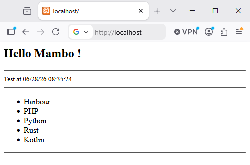

🎺️ Mambo - Motor de vistas¶
Introducción¶
Mambo es el motor de plantillas web que lleva integrado Hix y combina código web (HTML, JS, CSS, etc.) con Harbour, facilitando la creación de páginas web. Esto simplifica enormemente la construcción de cualquier página, ya que permite incorporar lógica a partir de los parámetros que recibe la vista, todo con la ayuda de Harbour.
Este tipo de motores se centran en simplificar el trabajo del desarrollador al diseñar páginas web. Permiten crear rápidamente páginas dinámicas y potentes mediante directivas sencillas para controlar el flujo de información.
Actualmente, existen algunos motores de plantillas muy populares (como Blade, Twig, Smarter, etc.), que básicamente tienen dos objetivos principales:
-
Facilitar el diseño de páginas.
-
Proporcionar a la comunidad una forma común de diseñar. Todos trabajan de la misma manera.
Impacto en la productividad¶
Al usar estos motores no tratamos solo de que las cosas se vean bonitas; Es una opción de ingeniería legítima. Al usar la herencia de plantillas (diseños), evitas copiar y pegar encabezados y pies de página en cada archivo. ¿Necesitas cambiar un enlace en el menú? Lo haces una vez y se actualiza en todo el sitio. Además, la sintaxis simplificada para bucles y condicionales reduce considerablemente la complejidad.
| Ventajas | Descripción |
|---|---|
| Sintaxis limpia | Capacidad de macrosusitución con elegantes {{ var }} o por ejemplo uso de funciones {{ time() }}. |
| Herencia de plantillas | Permite crear diseños "maestros" de los que heredan todas las demás vistas. |
| Seguridad integrada | Escapa automáticamente los datos para prevenir ataques XSS por defecto. |
| Separación de Responsabilidades | Te obliga a mantener la lógica de negocio separada de la capa de presentación (HTML). |
| Directivas de Control | Te proporciona estructuras como @foreach o @if, mucho más legibles que el código nativo. |
| Componentes Reutilizables | Facilita la creación de elementos (botones, alertas) que puedes usar en todo tu sitio web. |
| Gestión de Errores | Te ofrece mensajes de error más claros y específicos, centrados en el diseño de la vista. |
| Rendimiento (Caché) | Compila a código nativo una sola vez y lo sirve desde la caché para obtener la máxima velocidad. |
| Ecosistema y Filtros | Numerosas extensiones para formatear automáticamente fechas o texto. |
| Mantenibilidad | Es mucho más fácil retomar un proyecto meses después y entender qué está pasando. |
Comparación¶
Lenguajes como php evolucionaron desde escribir algo como esto:
<ul>
<?php if (count($usuarios) > 0): ?>
<?php foreach ($usuarios as $usuario): ?>
<li><?php echo htmlspecialchars($usuario->nombre, ENT_QUOTES, 'UTF-8'); ?></li>
<?php endforeach; ?>
<?php else: ?>
<li>No hay usuarios registrados.</li>
<?php endif; ?>
</ul>
Hasta utilizar motores como este, que ofrecen mucha más claridad y funcionalidad.
Diferencias clave en este ejemplo:
- Seguridad: En PHP puro, si olvidas
htmlspecialchars, dejas la puerta abierta a ataques XSS. Con Mambo, la sustitución de macros{{ }}lo gestiona automáticamente.
En el caso de que quisieramos inyectar código html simplemente usariamos {!! !!}
-
Concisión: Utiliza directivas diferentes adaptadas a los comandos clásicos:
@if,@foreach,@for, etc. -
Legibilidad: No hay "ruido" visual de las etiquetas de apertura/cierre del lado del servidor, lo que permite a los diseñadores web trabajar más rápido.
Al usar un sistema de herencia, tu flujo de trabajo pasa de "editar 20 archivos" a "editar 1 archivo base y ver los cambios en 20 páginas". Si a esto le sumamos que no tienes que "sanear manualmente cada variable", puedes entregar proyectos en una fracción del tiempo.
UView() - Nuestro helper mágico¶
UView( cView, ... ) es la función que llamas desde cualquier controlador.
El primer parámetro es el nombre de la vista, y el resto son los parámetros que deseas
pasarle.
En el caso de tener activado HixStyle las vistas se cargaran directamente desde
la carpeta <cRoot>/views/
Como se ha explicado anteriormente, el flujo básico es router->controller->view.
Esto significa que un controlador procesa y recolecta toda la información necesaria que enviará a la vista que su únicopropósito es "pintar" una pantalla usando estos datos.
Ejemplo controller, recoleccion de datos y llamada a Mambo:
function main()
local aData := { "Harbour", "PHP", "Python", "Rust", "Kotlin" }
local cInfo := DToC(Date()) + ' ' + time()
return UView( 'welcome.html', aData, cInfo )
Ya solo quedara que tengamos una vista definida welcome.html
@args hMydata = {=>}, cInfo := ''
<html>
<h2>Hello Mambo !</h2>
<hr>
<small>Test at {{ cInfo }} </small>
<hr>
<ul>
@foreach cItem in hMyData
<li> {{ cItem }}
@endforeach
</ul>
<hr>
</html>
Básicamente el código empieza recogiendo los parámetros enviados desde el controlador y si no se encian, los inicializa -> fácil.
Despues podemos ver un simple uso de una directiva, en este caso @foreach ... @endforeach y como con {{ ... }} usamos las variables

Caché de vistas¶
El sistema funciona en dos modos:
live: analiza, compila y ejecuta la vista en tiempo real.
cached: ejecuta directamente una versión en caché de la vista y solo la vuelve a
analizar y recompilar si el archivo fuente original ha cambiado.
Por defecto, el sistema utiliza el almacenamiento en caché de vistas.
Al usar UView(), el motor guarda todas las vistas compiladas en la carpeta
.cached/views. Si detecta que el archivo fuente original ha sido modificado,
lo analizará, recompilará y ejecutará la vista. Si la vista no ha cambiado, simplemente
ejecuta la versión en caché.
Creación de una página¶
Por defecto, una página será HTML, pero puedes insertar y procesar código de Harbour en su interior. Lo que hace HixStyle es combinar dos entornos en uno de forma eficaz y fácil de usar.
Código HTML¶
Este es código web puro, donde puedes insertar macros de Harbour. El código va dentro
de {{ }} y solo debe contener código de Harbour.
Todo lo que escribas dentro de una macro {{ }} se sanitiza automáticamente.
No tienes que preocuparte por escapar el código HTML.